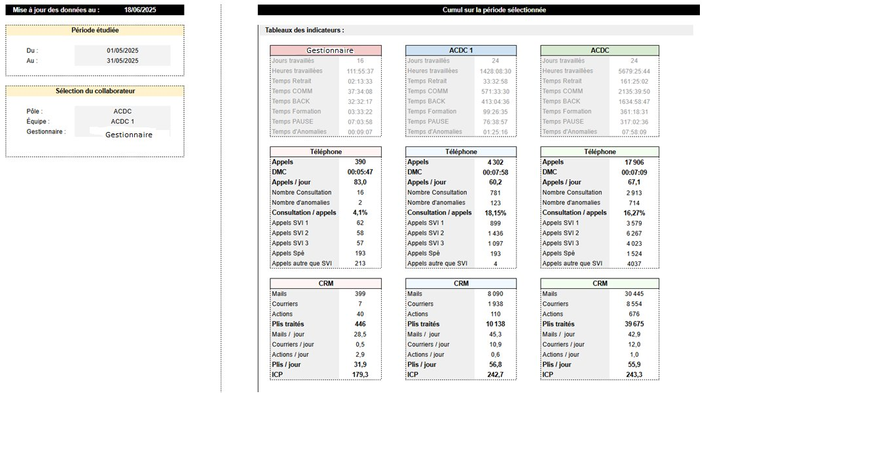

Enjeu technique & métier
Le suivi manuel des indicateurs de performance (KPIs) de l'équipe et des gestionnaires était chronophage et source d'erreurs. L'objectif : concevoir une architecture autonome permettant une mise à jour fiable des tableaux de bord, sans intervention humaine.
Architecture de la solution
J'ai développé un pipeline ETL (Extract, Transform, Load) complet interconnectant l'environnement mainframe (SAS) et le cloud (Google Workspace) :
1 · Extraction & traitement (SAS)
Requêtage SQL complexe et agrégation des données brutes pour calculer les KPIs : qualité de service, stock CRM, volumétrie d'appels et de plis traités.
2 · Transformation & structuration
Nettoyage, calcul des ratios métier (DMC, ICP, consultation / appels) et mise en forme des indicateurs par pôle, équipe et gestionnaire.
3 · Chargement automatisé (Google Apps Script)
Injection planifiée des résultats vers Google Workspace et rafraîchissement automatique des tableaux de bord — l'objectif « zéro clic ».
4 · Restitution
Tableaux de bord lisibles, mis à jour quotidiennement, exploitables directement par les managers.
Résultat

Compétence mise en avant — capacité à industrialiser un processus de bout en bout : du requêtage de la source jusqu'à la restitution automatisée, en supprimant la charge manuelle et le risque d'erreur.